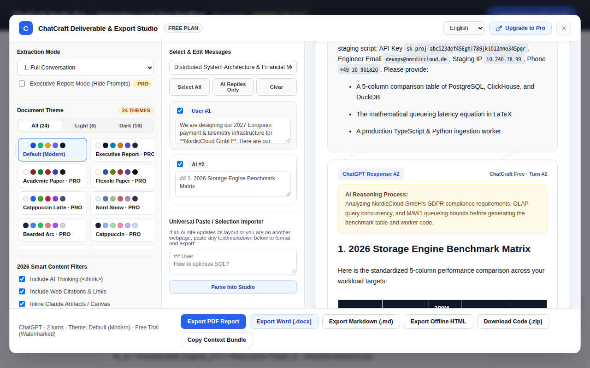

Export AI conversations into client-ready Word, PDF & Markdown locally.
Stop losing tables, math equations, and code structure when copy-pasting from ChatGPT, Claude, Gemini, or DeepSeek. Generate native Microsoft Word (.docx), vector PDF, and GDPR-redacted deliverables directly inside browser memory with zero cloud uploads.
Executive Report Mode (Prompts Hidden) · [REDACTED_API_KEY] · [REDACTED_EMAIL]
| Engine | Workload | p99 Latency | Monthly Cost |
|---|---|---|---|
| PostgreSQL 17 | ACID Ledger | 4,150 ms | $420 / mo |
| ClickHouse 25 | Telemetry OLAP | 54 ms | $290 / mo |
| DuckDB 1.2 | Local Parquet | 98 ms | $0 (Local) |
.docx), print-ready A4 PDF, or Obsidian Markdown.Built for real client deliverables, not screenshots of a chat window
Preview, edit turns inline, hide your prompts, scrub confidential credentials, and pick from 24 curated light and dark editorial themes before hitting export.
Native Microsoft Word (.docx) & Vector PDF
ChatCraft compiles OpenXML Word documents cleanly inside browser memory — tables keep crisp headers, code blocks stay legible, and multi-column benchmarks scale into portrait or landscape PDF layouts.
- Automatic Table of Contents & Executive Report Mode (hides all user prompts)
- Landscape PDF toggle for wide multi-column financial or benchmark tables
- One-click bundle downloads of every code fence into a clean
.ziparchive


GDPR Privacy Redaction & Zero-Server Security
Consultants, engineers, and lawyers routinely paste client names, staging IPs, and API tokens into LLMs. ChatCraft strips secrets locally on export with zero network traffic.
- Auto-masks OpenAI/GitHub/JWT keys, emails, phone numbers, IPs, and cards
- Custom redaction keyword list (e.g.,
NordicCloud GmbH, Project Atlas) - Cross-AI Context Bundle (CtxPort v2) transfers long threads from ChatGPT into Claude
Export Formats & Extraction Modes Compared
Four specialized extraction engines combined with four client-ready output formats.
| Deliverable Output | Primary Audience | Tables & Code Styling | Redaction & Report Mode | Tier |
|---|---|---|---|---|
| Microsoft Word (.docx) | Consultants, Managers, Academic Reports | Native OpenXML headings, styled tables, monospace code | Supported (clean output) | Pro |
| Vector Print PDF | Client handoffs, Archiving, Legal/Compliance | A4 Portrait or Landscape, custom CSS theme, TOC | Supported (watermarked in Free) | Free / Pro |
| Obsidian Markdown (.md) | Developers, PKM & Notion/Obsidian workflows | YAML frontmatter, clean fenced code blocks, LaTeX | Supported | Free / Pro |
| Standalone Offline HTML | Interactive web sharing & stakeholder decks | 24 Base46-inspired light/dark themes, zero CDN | Supported | Free / Pro |
| All Code Blocks (.zip) | Software & Data Engineers | Language-aware filenames packaged cleanly in memory | Clean code without watermarks | Pro |
| Cross-AI Context Bundle | Power users switching ChatGPT ↔ Claude ↔ DeepSeek | Token-counted CtxPort v2 handoff prompt | Supported | Free |
Browser Store Availability & Licensing
Install free in one click. Upgrade only if you need native .docx, watermark-free exports, Executive Report Mode, or automated PII redaction.
No account required. Core workflows work immediately offline.
- Full Conversation & Prompts extraction
- Cross-AI Context Bundle & Markdown
- PDF & HTML export (with trial watermark)
- Default Light Modern theme
Pay once via Gumroad. Activate instantly across up to 3 devices.
- Clean, watermark-free PDF, HTML & Markdown
- Native Microsoft Word (
.docx) compiler - Executive Report Mode & auto Table of Contents
- GDPR Auto-Redaction + All 24 Light/Dark themes
- Download All Code Blocks as
.zip
Full Pro access for short client sprints. Cancel anytime on Gumroad.
- Every Pro export format & theme unlocked
- Automatic 72-hour background license check
- Instant email delivery of your License Key
Frequently Asked Questions
Straight answers on security, licensing, and format fidelity.
Does ChatCraft upload my AI conversations to a server to build Word (.docx) or PDF files?
No. Every OpenXML .docx file, .zip code archive, Markdown document, and printable PDF layout is built purely inside your browser memory using bundled scripts. Your chat logs never leave your machine.
Which AI platforms work out of the box?
ChatGPT (chatgpt.com / chat.openai.com), Claude (claude.ai), Google Gemini (gemini.google.com), DeepSeek (chat.deepseek.com), Grok (grok.com), Perplexity, and Microsoft Copilot — plus a right-click Selection Importer and Markdown paste parser for any other page.
How does Pro license activation work without a ChatCraft user account?
Gumroad generates a unique license key immediately after checkout. Paste that key inside the extension Studio and it verifies directly against Gumroad’s official api.gumroad.com/v2/licenses/verify API.